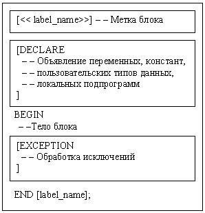

Переменные и константы. Кодовое множество
Общие положения
PL/SQL - это язык, структурированный блоками. Это значит, что основные единицы (процедуры, функции и анонимные блоки), составляющие программу PL/SQL, являются логическими БЛОКАМИ, которые могут содержать любое число вложенных в них подблоков. Обычно каждый логический блок соответствует некоторой проблеме или подпроблеме, которую он решает.
Блок (или подблок) позволяет вам группировать логически связанные объявления и предложения. Благодаря этому вы можете размещать объявления близко к тем местам, где они используются. Объявления локальны в блоке, и перестают существовать, когда блок завершается.
Как показывает рисунок 5, блок PL/SQL имеет три части: декларативную часть, исполняемую часть и часть обработки исключений. (ИСКЛЮЧЕНИЕМ в PL/SQL называется условие, вызывающее предупреждение или ошибку.) Исполняемая часть обязательна; две остальные части блока могут отсутствовать.

Рисунок 5 - Структура блока PL/SQL
Порядок частей блока логичен. Блок начинается с декларативной части, в которой объявляются объекты. С объявленными объектами осуществляются манипуляции в исполнительной части. Исключения, возбуждаемые во время исполнения, могут быть обработаны в части обработки исключений.
Каждый блок может содержать другие блоки; иными словами, блоки могут быть вложены друг в друга. Вложенный блок называется подблоком; он вложен в окружающий блок. Вы можете вкладывать блоки в исполнительной части или части обработки исключений блока PL/SQL, но не в декларативной части. Кроме того, вы можете определять локальные подпрограммы в декларативной части любого блока. Однако вызывать локальные подпрограммы можно только из того блока, в котором они определены.
Переменные и константы
PL/SQL позволяет вам объявить переменные и константы, а затем использовать их в SQL и процедурных предложениях в любом месте, где допускается использование выражения. Однако ссылки вперед не допускаются. Таким образом, вы должны объявить переменную или константу прежде, чем сможете ссылаться на нее в других предложениях, в том числе в других объявлениях.
Объявления переменных
Ваша программа хранит значения в переменных и константах. Во время выполнения программы значения переменных могут изменяться, а значения констант не могут.
Вы можете объявлять переменные и константы в декларативной части любого блока PL/SQL, подпрограммы или пакета. Объявление распределяет место для значения, специфицирует его тип данных и задает имя, по которому можно обращаться к этому значению. Объявление может также присвоить начальное значение и специфицировать ограничение NOT NULL.
Примеры :
Begin_time DATE;
Storage_id SMALLINT := 0;
name VARCHAR2(20) NOT NULL := 'picture';
Первое объявление именует переменную типа DATE. Второе объявление именует переменную типа SMALLINT и использует оператор присваивания (:=), чтобы присвоить этой переменной нулевое начальное значение. Третье объявление именует переменную типа VARCHAR2, специфицирует для нее ограничение NOT NULL и присваивает ей начальное значение 'AP001'.
Нельзя присваивать значения NULL переменным или константам, объявленным как NOT NULL. Если вы попытаетесь это сделать, будет возбуждено предопределенное исключение VALUE_ERROR. За ограничением NOT NULL должна следовать фраза инициализации; в противном случае вы получите ошибку компиляции.
Например, следующее объявление незаконно:
name VARCHAR2(20) NOT NULL; -- нет начального значения
Как показывают следующие примеры, инициализирующее выражение может быть сколь угодно сложным и может ссылаться на ранее инициализированные переменные и константы:
pi CONSTANT REAL := 3.14159;
radius REAL := 1;
area REAL := pi * radius**2;
В объявлениях констант зарезервированное слово CONSTANT должно предшествовать спецификатору типа, как показывает следующий пример:
Price_max CONSTANT REAL := 5000.00;
Использование DEFAULT
Если хотите, вы можете использовать зарезервированное слово DEFAULT вместо оператора присваивания, чтобы инициализировать переменную или константу:
Storage_id SMALLINT DEFAULT 15;
valid BOOLEAN DEFAULT FALSE;
Можно также использовать DEFAULT для инициализации параметров подпрограмм, параметров курсоров и полей в пользовательских записях.
Объявляемая переменная может иметь любой тип данных, присущий SQL, такой как NUMBER, CHAR и DATE, или присущий PL/SQL, такой как BOOLEAN или BINARY _ INTEGER . Например, предположим, что вы хотите объявить переменную с именем num _ var так, чтобы она могла хранить 4-значные числовые значения, и переменную с именем bool , которая может принимать будевские значения TRUE или FALSE. Вы объявляете эти переменные так:
Goods_id NUMBER(4);
bool BOOLEAN;
Вы можете также объявлять записи и таблицы PL/SQL, используя составные типы данных PL/SQL: RECORD и TABLE.
Присваивания переменным значений
Вы можете присваивать переменным значения двумя способами. Первый способ использует оператор присваивания := (двоеточие, за которым следует знак равенства). Слева от оператора присваивания кодируется имя переменной, а справа - выражение.
Примеры правильных присваиваний :
summa:= price * quantity;
new_price:= price * 0.10;
str1 := SUBSTR('adcbbnn', 2, 4);
val := FALSE;
Второй способ присвоить значение переменной - это извлечь в нее значение из базы данных посредством фразы INTO предложения SELECT или FETCH. Например, вы можете заставить ORACLE вычислить 10% повышение цены товара при извлечении его из таблицы:
SELECT price* 0.10 INTO new_price FROM goods WHERE good_id=5;
После этого значение переменной new _ price можно использовать в других вычислениях, либо вставить его в таблицу базы данных.
Объявления констант
Объявление константы аналогично объявлению переменной, с той разницей, что вы должны добавить ключевое слово CONSTANT и немедленно присвоить константе значение. Впоследствии никакие присваивания константе не допускаются. В следующем примере вы объявляете константу с именем min_balance:
m in _ balance CONSTANT REAL := 10.00;
Атрибуты
Переменные и константы PL/SQL имеют АТРИБУТЫ, т.е. свойства, позволяющие вам ссылаться на тип данных и структуру объекта, не повторяя его объявление. Аналогичные атрибуты имеются у таблиц и столбцов базы данных, что позволяет вам упростить объявления переменных и констант.
Атрибут %TYPE
Атрибут %TYPE представляет тип данных переменной, константы или столбца базы данных. В следующем примере, %TYPE представляет тип данных переменной:
credit REAL(7,2);
debit credit%TYPE;
Переменные и константы, объявленные с атрибутом %TYPE, трактуются так, как если бы они были объявлены с явным типом данных. Например, в примере выше PL/SQL рассматривает переменную debit как переменную типа REAL(7,2).
Следующий пример показывает, что объявление через %TYPE может включать фразу инициализации:
balance NUMBER(7,2);
minimum_balance balance%TYPE := 10.00;
Атрибут %TYPE особенно полезен при объявлении переменных, которые ссылаются на столбцы базы данных. Вы можете ссылаться на таблицу и столбец, или указывать также и владельца таблицы, как показывает следующий пример:
Volume1 scott.goods.volume%TYPE;
Использование атрибута %TYPE при объявлении volume 1 имеет два преимущества. Во-первых, вы не обязаны знать точный тип столбца volume . Во-вторых, если определение столбца volume изменится, то тип данных переменной volume 1 изменится соответственно во время выполнения.
Например, таблица g oo d s содержит столбец с именем name . Чтобы дать переменной name _ new тот же тип данных, что у столбца name , не зная точного определения этого столбца в базе данных, объявите name _ new с использованием атрибута %TYPE:
name_new goods.name%TYPE;
Атрибут %ROWTYPE
Атрибут %ROWTYPE возвращает тип записи, представляющей строку в таблице (или обзоре). Такая запись может содержать целую строку данных, выбранных из таблицы или извлеченных курсором. В следующем примере вы объявляете запись, которая хранит строку, выбранную из таблицы goods .
DECLARE goods_rec goods%ROWTYPE;
Столбцы в строке таблицы и соответствующие поля в записи имеют одинаковые имена и типы данных. В следующем примере вы выбираете значения столбцов в запись с именем goods _rec:
DECLARE
goods_rec goods%ROWTYPE; ...
BEGIN
SELECT * INTO goods_rec FROM goods WHERE ...
...
END;
Значения столбцов, возвращаемые предложением SELECT, размещаются в индивидуальных полях записи. Вы обращаетесь к конкретному полю, используя квалифицированые ссылки. Например, вы могли бы обратиться к полю goods _ id следующим образом:
IF goods_rec.goods_id = 20 THEN ...
Кроме того, вы можете присваивать значение выражения PL/SQL конкретному полю, как показывают следующие примеры:
goods_rec.name := 'books';
goods_rec.price:= goods_rec.price * 1.15;
Нельзя включать выражений инициализации в объявления тех переменных, которые используют %ROWTYPE. Тем не менее, есть способ присвоить значения сразу всем полям записи - вы можете присвоить записи список значений столбцов, используя предложения SELECT...INTO или FETCH...INTO (работа с курсорами будет рассмотрена далее)
Соглашения об именах
Одни и те же соглашения об именах действительны для всех программных объектов и единиц PL/SQL, включая константы, переменные, курсоры, исключения, процедуры, функции и пакеты. Имена могут быть простыми, квалифицированными, удаленными или квалифицированными удаленными.
Например, вы можете обращаться к процедуре с именем insert _ goods любым из следующих способов:
insert _ goods (...); -- простое
pac _ goods . insert _ goods (...); -- квалифицированное
insert _ goods @ newyork (...); -- удаленное
pac _ goods . insert _ goods @ newyork (...); -- квалифиц. удаленное
В первом случае вы просто указываете имя процедуры. Во втором случае вы должны квалифицировать имя процедуры именем пакета, потому что процедура хранится в пакете с именем pac _ goods . В третьем случае вы обращаетесь к связи баз данных newyork, потому что (независимая) процедура находится на удаленной базе данных. В четвертом случае вы квалифицируете имя .
Сфера и видимость
Ссылки на идентификатор разрешаются согласно его сфере и видимости. СФЕРА идентификатора - это та область программной единицы (блока, подпрограммы или пакета), из которой вы можете ссылаться на этот идентификатор. Идентификатор называется ВИДИМЫМ в тех областях, из которых вы можете ссылаться на него, используя неквалицифированное имя.
Например, идентификаторы, объявленные в блоке PL/SQL, считаются локальными в этом блоке и глобальными для всех его подблоков. Если глобальный идентификатор переобъявляется в подблоке, то оба идентификатора остаются в сфере. В подблоке, однако, будет видимым лишь локальный идентификатор, потому что для ссылок к глобальному идентификатору вам приходится использовать квалифицированное имя.
Хотя нельзя объявить идентификатор дважды в одном и том же блоке, можно объявить одинаковые идентификаторы в двух разных блоках. Объекты, представленные этими идентификаторами, различны, и любое изменение одного из этих объектов не затрагивает другой.
Управляющие структуры
Управляющие структуры составляют наиболее важное расширение языка SQL в PL/SQL. Благодаря им вы не просто можете манипулировать данными ORACLE, но можете управлять потоком выполнения, используя предложения условного, итеративного и последовательного управления выполнением, такими как IF-THEN-ELSE, FOR-LOOP, WHILE-LOOP, EXIT-WHEN и GOTO. В совокупности, эти предложения могут обработать любую ситуацию (см. тему 7).
Кодовое множество
Вы пишете программу PL/SQL как строки текста, используя специфический набор символов. В этот набор символов входят:
- прописные и строчные буквы A .. Z, a .. z;
- цифры 0 .. 9;
- символы табуляция, пробел и возврат каретки ("пропуски");
- символы ()+-*/<>=!~;:.'@%,"#$^&_|{}?[].
PL/SQL не различает прописных и строчных букв, и рассматривает строчные буквы как эквиваленты соответствующих прописных букв, исключая строковые и символьные литералы.
Лексические единицы
Строка текста программы PL/SQL распадается на группы символов, называемые ЛЕКСИЧЕСКИМИ ЕДИНИЦАМИ, которые можно классифицировать следующим образом:
- разделители (простые и составные символы);
- идентификаторы, в том числе зарезервированные слова;
- литералы;
- комментарии.
РАЗДЕЛИТЕЛЬ - это простой или составной символ, имеющий в PL/SQL специальный смысл. Например, вы используете разделители для представления арифметических операций, таких как сложение и вычитание.
Простые символы кодируются как одиночные символы:
+ оператор сложения
- оператор вычитания/отрицания
* оператор умножения
/ оператор деления
= оператор сравнения
< оператор сравнения
> оператор сравнения
( ограничитель выражения или списка
) ограничитель выражения или списка
; терминатор предложения
% индикатор атрибута
, разделитель элементов
. селектор компоненты
@ индикатор удаленного доступа
' ограничитель символьной строки
" ограничитель идентификатора
: индикатор хост-переменной
Составные символы кодируются как пары символов:
** оператор возведения в степень
<> оператор сравнения
!= оператор сравнения
~= оператор сравнения
^= оператор сравнения
<= оператор сравнения
>= оператор сравнения
:= оператор присваивания
=> оператор ассоциации
.. оператор интервала
|| оператор конкатенации
<< ограничитель метки
>> ограничитель метки
-- индикатор однострочного комментария
/* (начальный) ограничитель многострочного комментария
*/ (конечный) ограничитель многострочного комментария.
Идентификаторы
Вы используете идентификаторы для именования программных объектов и единиц PL/SQL, к которым относятся константы, переменные, исключения, курсоры, подпрограммы и пакеты. Некоторые примеры идентификаторов : X, t2, phone# , credit_limit, LastName,oracle$number.
Идентификатор состоит из буквы, за которой (необязательно) следуют одна или несколько букв, цифр, знаков доллара, подчеркиваний или знаков номера (#). Другие символы, такие как дефис, наклонная черта или пропуск, в идентификаторе незаконны, как показывают следующие примеры:
- mine&yours -- незаконный амперсанд;
- debit-amount -- незаконный дефис ;
- on/off -- незаконная косая черта ;
- user id -- незаконный пробел.
Буквы в идентификаторах могут быть как прописными, так и строчными. PL/SQL не различает их, за исключением строковых и символьных литералов. Поэтому, если единственным различием между идентификаторами является регистр соответствующих букв, то PL/SQL трактует такие идентификаторы как одинаковые, как показывает следующий пример:
lastname LastName -- то же, что lastname LASTNAME -- то же, что lastname и LastName
Длина идентификатора не может превышать 30 символов. Однако значащим считается каждый символ в идентификаторе, включая знаки доллара, подчеркивания и знаки номера. Например, следующие два идентификатора считаются в PL/SQL различными:
lastname
last_name
Зарезервированные слова
Некоторые идентификаторы, называемые ЗАРЕЗЕРВИРОВАННЫМИ СЛОВАМИ, имеют специальный смысл в PL/SQL и не могут быть переопределены. Например, слова BEGIN и END, которые окружают исполнительную часть блока или подпрограммы, зарезервированы.
Однако заререзированные слова можно включать как составные части в идентификаторы, как показывает следующий пример:
DECLARE end_of_game BOOLEAN; -- законно ...
Как правило, зарезервированные слова пишутся прописными буквами, чтобы облегчить читабельность. Однако это необязательно; как и любые другие идентификаторы PL/SQL, зарезервированные слова можно кодировать строчными или смешанными буквами.
Идентификаторы в кавычках
Для большей гибкости, PL/SQL позволяет вам заключать идентификаторы в двойные кавычки. Идентификаторы в кавычках необходимы нечасто, но иногда они могут быть полезными. Такой идентификатор может содержать любую последовательность печатных символов, включая пробелы, но исключая двойные кавычки: "X+Y", "last name", "*** header info ***".
Максимальная длина идентификатора в кавычках составляет 30 символов, не считая кавычек.
Использование в качестве идентификаторов в кавычках зарезервированных слов PL/SQL допускается, но НЕ рекомендуется. Использование зарезервированных слов является плохой практикой программирования.
Литералы
Литерал - это явное число, символ, строка или булевское значение, не представленное идентификатором. Примерами могут служить числовой литерал 147 и булевский литерал FALSE.
Числовые литералы
В арифметических выражениях могут использоваться два вида числовых литералов: целочисленные и вещественные. Целочисленный литерал - это целое число с необязательным знаком и без десятичной точки. Примеры целочисленных литералов: 6; -14; 0; +32767.
Вещественный литерал - это целое или дробное число с необязательным знаком и с десятичной точкой. Примеры вещественных литералов: 6.6667; -12.0; 3.14159.
Символьные литералы
Символьный литерал - это одиночный символ, окруженный одиночными апострофами. Примеры: 'Z'; '%'; '7'; ' '; 'z'; '('.
Символьные литералы включают все печатные символы в наборе символов PL/SQL: буквы, цифры, пропуски и специальные символы. PL/SQL чувствителен к регистру букв в символьных литералах. Так, литералы 'Z' и 'z' считаются различными.
Строковые литералы
Символьное значение может быть представлено идентификатором или явно записано в виде строкового литерала, который должен быть последовательностью из нуля или более символов, заключенной в апострофы: 'Hello, world!'; 'XYZ Corporation'; '10-NOV-91'.
PL/SQL чувствителен к регистру букв в строковых литералах. Например, следующие литералы считаются различными: 'baker' и 'Baker'.
Булевские литералы
Булевские литералы - это предопределенные значения TRUE и FALSE, а также "не-значение" NULL, которое обозначает отсутствие, неизвестность или неприменимость значения. Не забывайте, что булевские литералы НЕ являются строками.
Комментарии
Добавление комментариев в вашу программу способствует ее читабельности и облегчает ее понимание. Обычно комментарии используются для описания назначения и использования каждого сегмента кода. PL/SQL поддерживает два стиля комментариев: однострочные и многострочные.
Однострочный комментарий начинается с двойного дефиса (--) и заканчивается концом строки. Примеры:
-- начало обработки
SELECT price INTO new_price FROM goods -- взять текущую цену
WHERE goods_id= 10;
chet:= new_price * 150; -- вычислить величину счета
Заметьте, что однострочный комментарий может начинаться на одной строке с предложением (или частью предложения).
Многострочный комментарий начинается с пары символов /* и заканчивается парой символов */. Пример:
/* вычислить 15% премию для
сотрудников с высоким рейтингом */
IF rating > 90 THEN bonus := salary * 0.15;
END IF;
Этот стиль позволяет, например, легко "закомментировать" секцию блока, которую вы хотите временно исключить из выполняемого кода.
Нельзя вкладывать комментарии друг в друга. Кроме того, нельзя использовать однострочные комментарии в том блоке PL/SQL, который будет обрабатываться динамически программой прекомпилятора ORACLE, потому что в этом случае символы конца строки игнорируются, и, как следствие, однострочный комментарий растянется до конца блока, а не только до конца строки. Поэтому в таких случаях используйте многострочные комментарии.